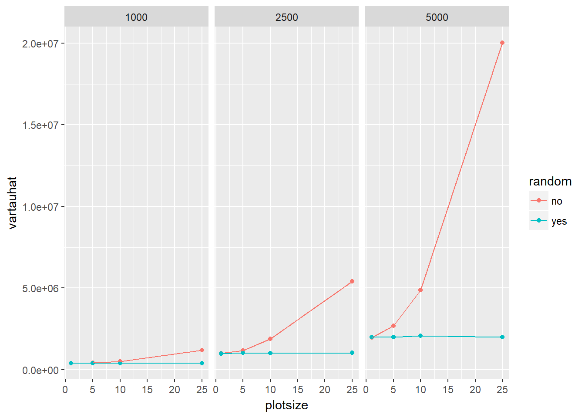
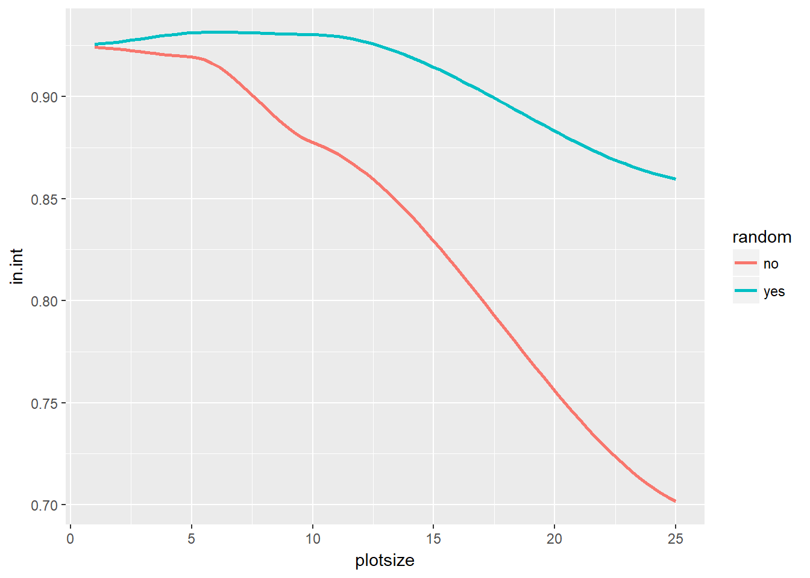

Data was collected using a function created in R that would estimate the total number of trees. I have unfortunately lost that function, but I can describe it. First, parameters were entered for plot size, sample size, total number of plots, and number of trees. Next, a function is used to distribute the trees and create the x and y coordinates. Then the estimator function was ran 2500 times in order to create a large, accurate sample of what is happening. The function returns a matrix with the data and I then took the mean for the total estimate, the variance, and whether the actual number of trees with within a 95% confidence interval. I then took these values and put them into a dataframe. Here are the results:
library(ggplot2)
tauhat = read.csv("C:/Users/mitch/Documents/portfolio/data/tauhat.csv")
tauhat$plotsize = tauhat$ï..plotsize
ggplot(tauhat, aes(x = plotsize,y=vartauhat,color = random)) + geom_point() + geom_line()+ facet_wrap(~numtrees)
The variance gives us information on how accurate the sampling was. For the nonrandom plantation, variance differed greatly as the plot size became larger and sample size decreased. The variance also increased significantly when the number of trees on the plantation increased. The random distribution had a fairly constant variance when it came to plot and sample sizes. It only increased due to the number of trees.
ggplot(tauhat, aes(x = plotsize, y = in.int, color = random)) + geom_smooth(se=FALSE)
Another test for accuracy is whether the total number of trees is within the 95% confidence interval for the total estimate. As plot size and sample size decrease, the percentage of the time that the total number of trees is within the 95% confidence interval of the estimate also decreases. This percentage decreases faster for a nonrandom distribution than a random distribution.
A smaller plot size and a large sample size is more accurate than a large plot size with a small sample size for both types of plantations. The true value for the number of trees is less likely to be in the 95% confidence interval of tauhat as sample size decreases. As the number of trees increases, the variance also increases. The variance becomes very large when the amount of trees is high and the sample size is small. If we do not have a clear idea of the number of trees, using a plot size of 5 and a sample size of 100 seems like the most realistic. A plot size of 1 and a sample size of 2500 has less variance, however, taking a sample of 2500 may be unrealistic. For a randomly distributed plantation the variance only increases due to the number of trees on the plantation. However, the percentage of time the actual number of trees is within the 95% confidence interval does decrease as sample size decreases. Therefore, the best, realistic plot and sample size combination is either 5x5 and 100 or 10x10 and 25.